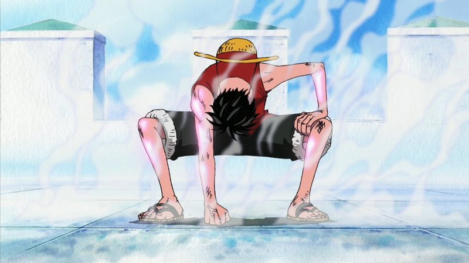
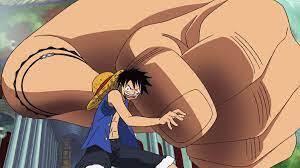
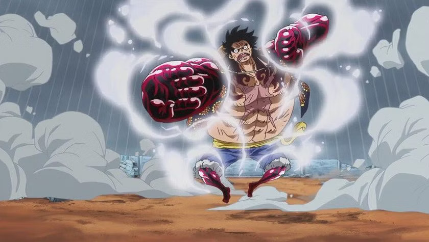
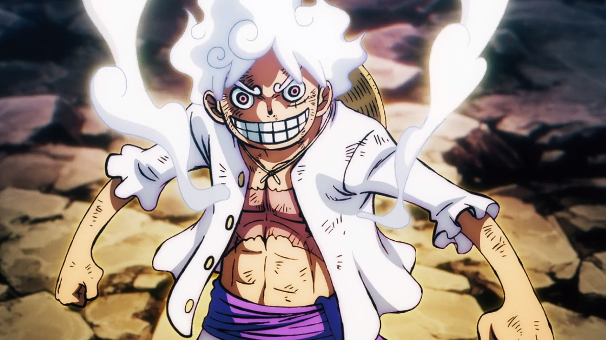

Monkey.D.Luffy
Base form
(no gears)
Base form means that he is in his orginal form without any transfomations that he has such as gear
2,3,4 and 5. In his base form it he is only limited to using haki and his streching abilities. Gears are the
names of his transformations.

Gear 2
This technique involves Luffy speeding up the blood flow
in all or selected body parts, in order to provide them with more oxygen and nutrients. This makes him much
faster and more powerful. The technique uses even more oxygen and energy, using up more food and causing Luffy
to pant heavily. The increase in his metabolism causes him to be hungrier than usual or even have a paralysis
type effect after prolonged use of it. In Luffy's case, his organs and blood vessels are made of rubber allowing
them to expand and contract at greater rates without tearing. Essentially, Luffy increases the blood flow by
forcing more blood through his blood vessels thus increase his fighting ability. This mode's enhancements to
Luffy's physiology giving him the ability to use a new, stronger set of techniques

Gear 3
Luffy corks his mouth with his thumb, bites into his
thumb joint (making a small opening) and blows hard into his bones, which inflates his arm. He is then able to
transfer the air through his entire body, requiring the torso to act as an interface for his various limbs.
Luffy blows so much air into his body that when they are all focused on a single limb, they become the size
equivalent to (or greater than) that of a giant's, if anything resembling Oars' size. Used with his
already-strong physiology, this apparently gives his arm more mass and a larger area to attack with far greater
strength

Gear 4
(Bounce-
Man)
Luffy's first Gear 4 form is called Bounce-Man: Luffy's
proportions become warped, and his body becomes much larger in size, with his arms, upper torso, and legs coated
in Busoshoku Haki. As a side-effect, he is incapable of standing still on the ground, and instead constantly
bounds on the spot. This form was created in order to combat the many powerful and large animals on Rusukaina.

Gear 4
(Tank-
Man)
During his battle with Charlotte Cracker, Luffy revealed
another form of Gear 4 known as Tankman (タンクマン, Tankuman?, English versions: Tank-Man). Currently, the base form
of "Tankman" is unknown, since the only time it has been used was after Luffy ate Cracker's Biscuits to the
point where he was completely full and used his "Manpuku Version" form.[5] Due to the increase in Luffy's
metabolism Gear 4 causes, he is able to leave his Tankman form in a short time after using it. This is the case
when Luffy was able to burn off the massive amount of biscuits he had eaten in his fight with Cracker shortly
after he defeated

Gear 4
(Tank-
Man)
During his battle with Charlotte Katakuri, Luffy revealed
another form of Gear 4 known as Snakeman (蛇男スネイクマン, Suneikuman?, English versions: Snake-Man).[26] Unlike his
other two Gear 4 forms, Luffy does not significantly expand, with his forearms, legs, and upper torso being only
slightly enlarged and the rest of his body retaining its normal proportions. The spread of Haki is slightly more
limited, as it does not appear to extend onto Luffy's shoulders and upper body. However, Luffy's hair becomes
flame-shaped like his Haki and sticks up.

Gear 5
Gear 5 is his most fowerful form with the most unique
powers awakened while he was fighting Kaido(Villian from One piece). It allows the person to become all white
and make imagine come to reality. In this awakened state you can make enything rubber with a touch, make
yourself giant, and have incrediable strength. Some of these attacks such as GomuGomu no Gigant(RubberRubber
giant), a technique where you are a literal size of a giant. GomuGomu no Bajrang gun(Meaning Monkey God Kong)
whilst using the giant form making your hand even bigger like gear 3 Luffy coats it with haki to deleiver his
most powerful attack than would literally obliterate anything.
All info site